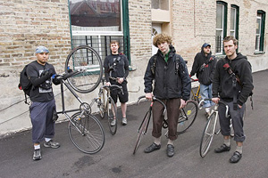

Submitted on Wed, 08/30/2006 - 2:08pm
 THE ASSOCIATED PRESS
THE ASSOCIATED PRESS
CHICAGO -- A union claiming to represent Starbucks Corp. workers at a handful of coffeehouses said Wednesday that employees of a Chicago store have declared their membership, becoming the first outside New York City to do so.
The baristas at the Logan Square Starbucks store joined the IWW Starbucks Workers Union Tuesday night, the union said. They issued a set of demands that included a living wage, guaranteed work hours and the reinstatement of IWW baristas fired for organizing activity.
Starbucks, the world's largest specialty coffee maker, often is lauded for offering generous benefits that include health insurance for part-time workers. But the two-year-old union, which has members at seven Starbucks locations, contends that workers face low wages and barriers to health care and other benefits.
Submitted on Thu, 07/06/2006 - 8:04pm
The founders of Chicago's first bike messenger collective think there's gotta be a better way.
Written by Scott Eden; photographs by Jon Randolph.
June 23, 2006
The Chicago Reader
RENE CUDAL WAS the last to quit. The Friday after Labor Day 2005 was the day he’d marked in his calendar, but he procrastinated all morning and afternoon, dreading the moment his boss would put two and two together. Finally the boss went home. Cudal called him that evening and gave him two weeks’ notice.
A bike messenger quitting isn’t so unusual—messengers will tell you they all develop a strategy to extract themselves from the job, which is defined by a high risk of bodily harm, low wages, and few or no benefits. Michael Carey, Cudal’s boss at On Time Courier, was a former messenger himself. But Carey, a big, block-shouldered man with a reputation as both a polished salesman and a hard-line intimidator, didn’t take Cudal’s news well. “What’s happening?” Cudal remembers him saying. “What are you doing? Starting your own messenger company?”
Submitted on Sun, 01/15/2006 - 5:42pm
By "Free Radical" - Originally posted at Chicago Indymedia.
 On January 14, 2005, members of the Chicago General Membership Branch of the Industrial Workers of the World labor union (IWW) called for an informational picket to boycott the Ideal Hand Car Wash in Chicago’s Albany Park neighborhood after the managers and owners of the business refused to pay Neal Rysdahl, a longtime member of the IWW, the $227.50 he was owed for over 45 hours of work he preformed for them.
On January 14, 2005, members of the Chicago General Membership Branch of the Industrial Workers of the World labor union (IWW) called for an informational picket to boycott the Ideal Hand Car Wash in Chicago’s Albany Park neighborhood after the managers and owners of the business refused to pay Neal Rysdahl, a longtime member of the IWW, the $227.50 he was owed for over 45 hours of work he preformed for them.
The highly visible protest began at 8 AM, with a small but dedicated group of picketers banging bucket drums, shaking noisemakers, passing out leaflets, and carrying signs reading, “Ideal Car Wash Cheats Workers,” and “An Injury to One is an Injury to All!” Notably, one picketer dressed in a clown costume held a sign reading, “Ideal Bosses Are Bozos!” to mock the clown Ideal usually uses to attract customers.
Submitted on Thu, 06/30/2005 - 1:49am
Visit this site, and scroll down and click on the "Wobblies" link.
Submitted on Mon, 06/27/2005 - 8:59am
Fellow workers,
Below is the text of a short paper that I wrote on IHS issues for bicycle messengers. With the demise of the AFL's health and safety department, it resolves on us to once again pick up where they are falling behind. With that idea in mind, I present the first in what I hope to make a series of articles about Health & Safety in active IWW campaigns. It is a short paper on Industrial Health and Safety issues for one of the most dangerous jobs being performed every day in our cities, the bicycle messenger. I realize on rereading it that I neglected to write about shoulder injuries from heavy bags, which would of course be an issue under the ergonomics section and is probably quite similar to the high injury rate for mail carriers that use shoulder bags.
I would like to write more articles like this, so if you have a particularly hazardous job or an interesting environmental, health, or safety issue, contact me and I'll see what I can do. Especially if you think that it will be useful in your organizing.